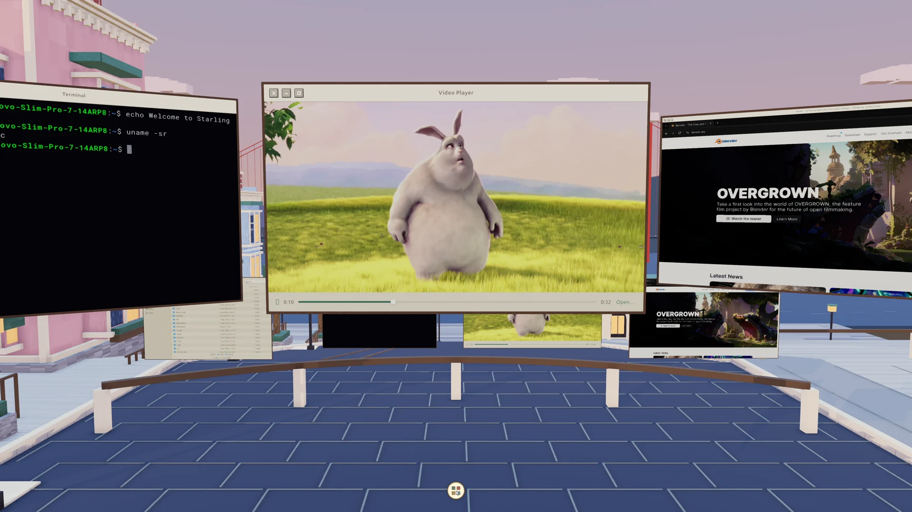

Familiar when you need it.
A straightforward 2D workspace. Switch into 3D from the control panel whenever you want a change of scene.
A familiar workspace. A living city.
Your everyday apps, in a whole new dimension.
Step into the city. Change your point of view.
Actual desktop capture01 / A CHANGE OF SCENE
Start with the desktop you know. Open the control panel, choose 3D Desktop, and the city becomes a place to explore. Walk down the street. Stop by the sea. Make yourself at home.
02 / SEE IT FOR YOURSELF
From an empty workspace to a city in motion.
Then Chrome, a film, your files, and a terminal.
Recorded on the running Starling desktop.
Download the film03 / REAL APPS. ROOM TO EXPLORE.
Browse in Chrome. Play a film. Find a file. Open a terminal. Your apps belong here—and moving between them is as familiar as Alt + Tab.
Watch the workspace come together
A straightforward 2D workspace. Switch into 3D from the control panel whenever you want a change of scene.
Follow the streets to the waterfront. Watch the ferry cross the bay. The scene moves around your workspace.
Live previews sit along the rail. Bring a window forward or use Alt + Tab to find your next task.
MEET YOUR NEXT POINT OF VIEW
04 / MAKE YOURSELF AT HOME
Supported on Ubuntu 26.04 LTS (amd64) and Windows through WSL2 with Ubuntu 26.04. On Ubuntu Desktop, Starling adds a session alongside your existing desktop. On WSL, connect with Windows Remote Desktop.
Full installation guideOpen a terminal and download the Ubuntu package:
curl -fLO https://github.com/starling-build/starling/releases/download/v0.5.0/starling_0.5.0_amd64.debIn the same folder, install Starling and its dependencies:
sudo apt install ./starling_0.5.0_amd64.debUbuntu Desktop includes the login manager. On a minimal or Server install, add it with sudo apt install gdm3.
Log out, select your name, and open the session menu (usually the gear icon). Choose Starling, then sign in.
Inside your Ubuntu 26.04 WSL terminal, download and install the package using the commands above. A login manager is not needed. Start Starling:
starling-sessionThen open PowerShell or the Windows Run dialog and connect:
mstsc /v:localhost:3390Early preview. Tested with AMD, Intel, and NVIDIA graphics, plus VirtIO-GPU / virgl in a VM and Windows through WSL2. See the installation guide for requirements and troubleshooting.